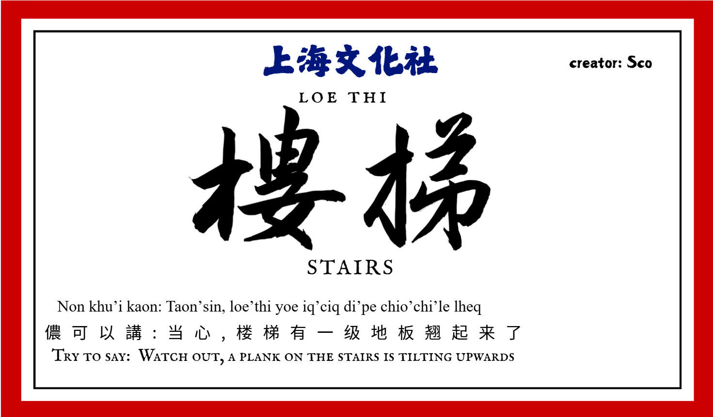

More than a translation. A connection.
Growing up in Shanghai, it is easy to know a street without knowing every story or voice associated with it. Shanghainese is part of the city's everyday culture, yet not everyone growing up here speaks it.
Our Shanghai Culture Club project started with something small: the places and objects we pass every day at school. We designed more than 100 Shanghainese word cards and placed them around campus, turning familiar surroundings into opportunities to notice the local language.
We wanted to make the words visible. Then we asked how to make them audible, too.

A project made to be encountered.
The physical cards brought words into school life. This website preserves an audio-enabled selection so people can explore them beyond the campus.
Choose everyday vocabulary
Places like the library, gym, cafeteria, and stairwell make language learning relevant to where we actually spend our time.
Design and share the cards
We paired written words and pronunciation guidance with illustrations, then displayed the cards around campus. Some word-card lettering was contributed by our school's calligraphy club.
Add voices to the words
This online collection brings together 26 word cards with word and example-sentence recordings. Sound adds a dimension that text and phonetic notation alone cannot fully capture.
A written word isn't the whole language.
We could carefully arrange characters, explanations, and phonetic notation on a card. But the rhythm of speech, the shape of a sound, and the feeling of hearing someone use a familiar phrase were harder to capture on paper.
Recordings are one attempt to close that gap—not to replace real conversation, but to encourage it. For us, learning about a city increasingly means listening to the people who give it life.
Hear the words →